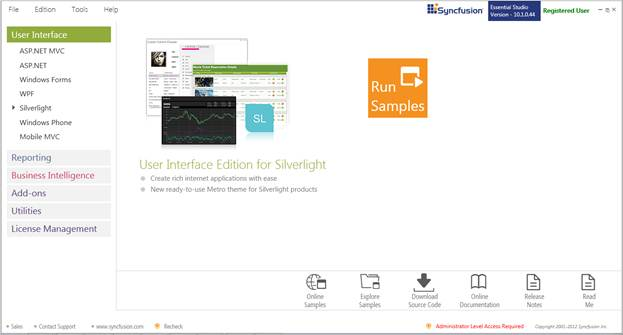
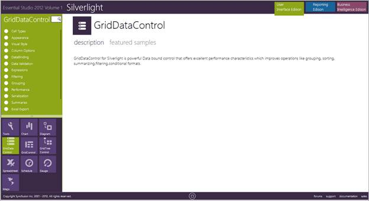
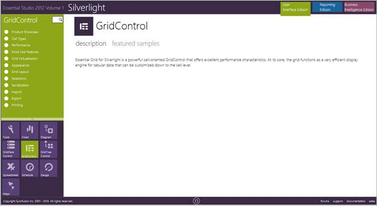
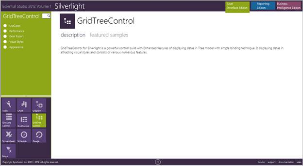

This section covers the location of the installed samples and describes the procedure to run the samples through the sample browser and online. It also lists the location of utilities, assemblies and source code.
Sample Installation Location
The Essential Grid Silverlight samples are installed under the following location, locally on the disk:
<Install Location>\Syncfusion\EssentialStudio\<Version Number>\Silverlight\GridData.Silverlight\Samples
<Install Location>\Syncfusion\EssentialStudio\<Version Number>\Silverlight\GridControl.Silverlight\Samples
<Install Location>\Syncfusion\EssentialStudio\<Version Number>\Silverlight\GridTree.Silverlight\Samples
Viewing Samples
Following are the steps to view the samples:
1. Click Start-->All Programs-->Syncfusion-->Essential Studio <v9.4.0.62> -->Dashboard. Syncfusion Essential Studio Dashboard <v9.4.0.62> window is displayed.

2. Click Run Samples link. Essential Studio Silverlight Edition sample browser is displayed.

3. Click the GridDataControl to view GridDataControl samples.

4. Click the GridControl to view GridControl samples.

5. Click the GridTreeControl to view GridTreeControl samples.

6. Select any sample and browse through the features.
Source Code Location
The default location of the Essential Grid Silverlight source code is:
[System Drive]:\Program Files\Syncfusion\Essential Studio\<Version Number>\Silverlight\Grid.silverlight\Src